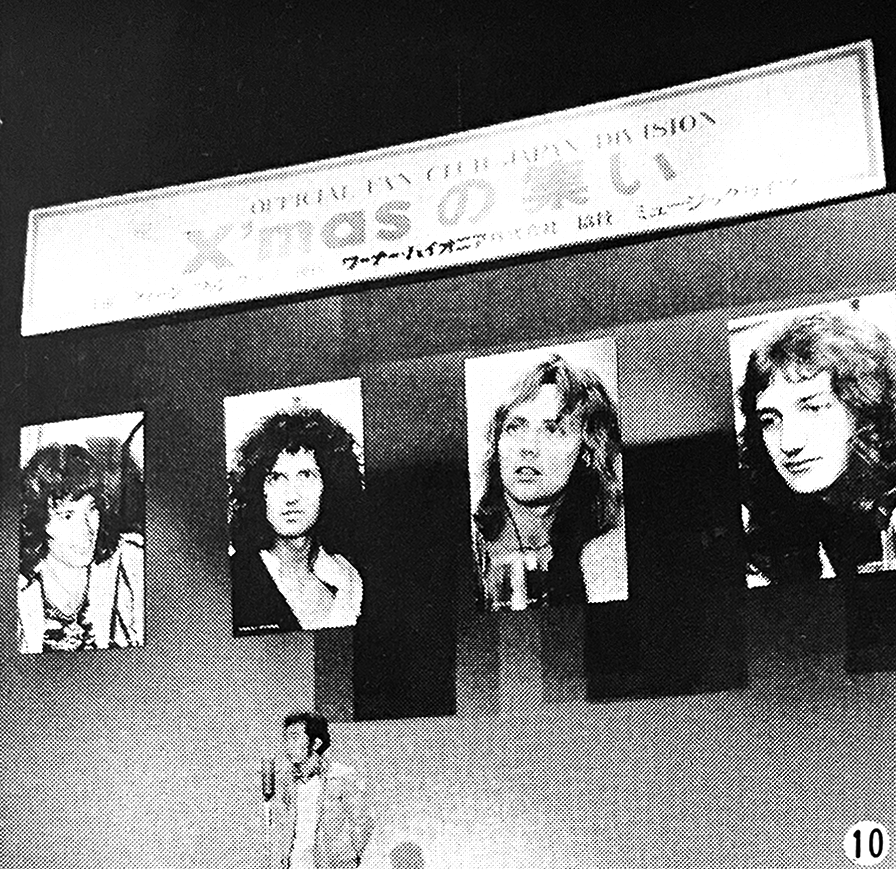
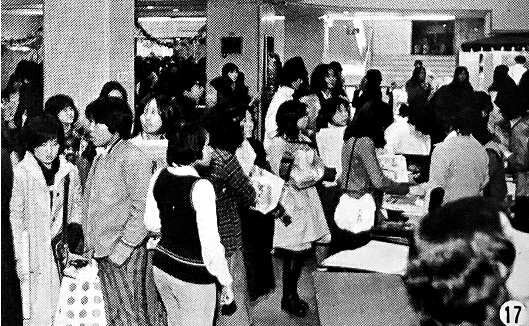
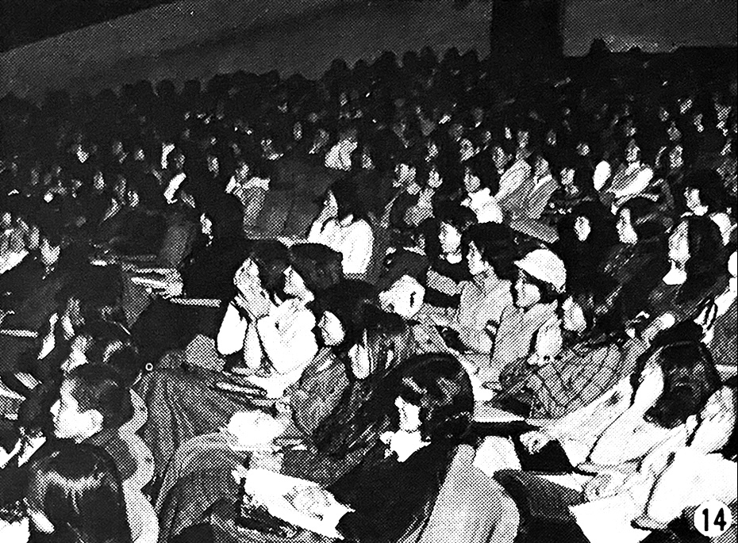
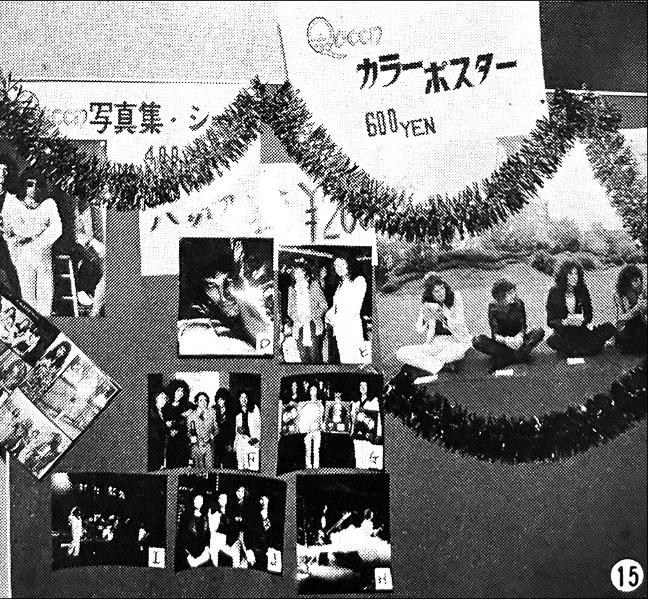

The Queen Fan Club of Japan Christmas Meetups
December 20th (Tokyo) and 24th (Osaka), 1975

The event was slated to begin at 1 PM, so the staff entered the venue at 9 AM and were extremely busy with the sound, lighting, film, stage setup, reception, and other preparations. As we were working, fan club members started to congregate around the reception desk one-by-one. At 12:30 we checked the clock and saw we had only a half hour left, so we hurriedly prepared the gifts and finally everyone was welcomed into the venue.
On the stage, there were large panels of Freddie, Brian, Roger, and John with a white Christmas tree hanging beside them. At first the stage was completely dark, but when a spotlight was shone on the panels of the four of them a cheer rose from the audience and the show began!
The event was hosted by Hamasaki of Warner Pioneer and he began with a formal greeting. This was followed by a speech by Fujikake of World Leisure and then a speech by Orita, head of the Western Music department of Warner Pioneer. Lastly, a speech by Music Life's associate editor Kaoruko Togo was given, who shared behind-the-scenes stories from ML's London coverage that weren't printed in the magazine. It was clear that the audience and the stage were gradually becoming one!

After the record played, we moved on to the highly-anticipated slideshow of images from the UK tour—the most recent images of the band available. They were brought over from London especially for this gathering and this slideshow for the fan club was the only way to see them! As for the UK tour, as you can see on another page in this issue, the show is amazing! The band finished the record and started touring without any time for rehearsals, and despite the tough conditions of being on the road, Queen continues to put on a lively and powerful performance. You can see this for yourself by looking at the photos! One thing to note is that during the UK tour, Freddie came out in a kimono for the encore, but then he quickly took it off and lo and behold, he ran around the stage in just his underwear (swimming trunks!), thrilling the audience!

After the raffle, Emiko Umeno and Yumiko Shibasaki in Tokyo and Yoshimi Fukada in Osaka each spoke about Queen, representing views of the Fan Club.
Finally... we hit the climax of the events: the film concert! It began with the film of Liar [I'm assuming either from the Rainbow '74 footage that was previously exhibited around Japan, or one of the 1973 promo videos], and then the Live in Japan film* started to thunderous applause and screams! Everyone's screams resonated throughout the venue as each of them appeared on-screen: "Roger, kyaaa!" "Ahhh, Freddie!" "Brian, I love you!" "John, you're so cute!" After Live in Japan, the last thing screened was One Thousand and One Nights of Stars. We had the TV video converted to film especially for this day, due to all of your requests.
And with that, the Christmas gathering came to a successful close. We also presented everyone with a signed poster of Queen, and we will also be raffling away three more to people who were unable to attend. A message from Queen themselves was supposed to arrive in time for this event, but due to the strike it was delayed and arrived on the 25th, so we're really sorry that you weren't able to hear it.**

We would like to express our sincere gratitude to Warner Pioneer, the stage production company Ecole Kikaku, the sound crew, the lighting crew, and the Watanabe Productions Friendship Society. We would love to see more people participate in the next gathering!
*Footnote: There is no further elaboration about this "Live in Japan" film, but it was most likely clips from the press conference and tea ceremony that the band participated in back in April of 1975. There's also a possibility that they screened part of the May 1st, 1975 Tokyo concert at the Budoukan as well, as this footage had been shown on TV earlier in the year. More can be read about this concert date at the excellent sites QueenConcerts.com and QueenLive.ca.
**The audio message from the band was most likely simple due to the language barrier, but can probably be considered lost media.